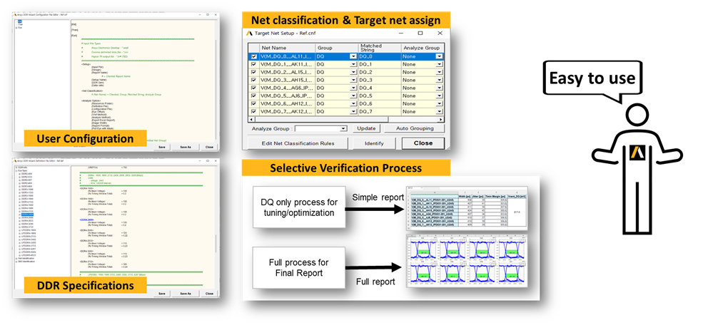

A new Solution for DDR analysis by Ansys Korea.

Why ADEA?
1. Easy
Pre-defined User Configurations
Pre-defined DDR Specifications
Automatic Net Classification & Target Net Assign Algorithm
Selective Verification Process
2. Simple
One-Click Verification Process
3. Customizable
Customziable Verification Algorithm & Process
Customziable Final Report (Excel, HTML, etc.)
User Guide
Quick Guide (EN) - PDF
User Guide (EN) - PDF
Quick Guide (KO) - PDF
User Guide (KO) - PDF
Guide Videos